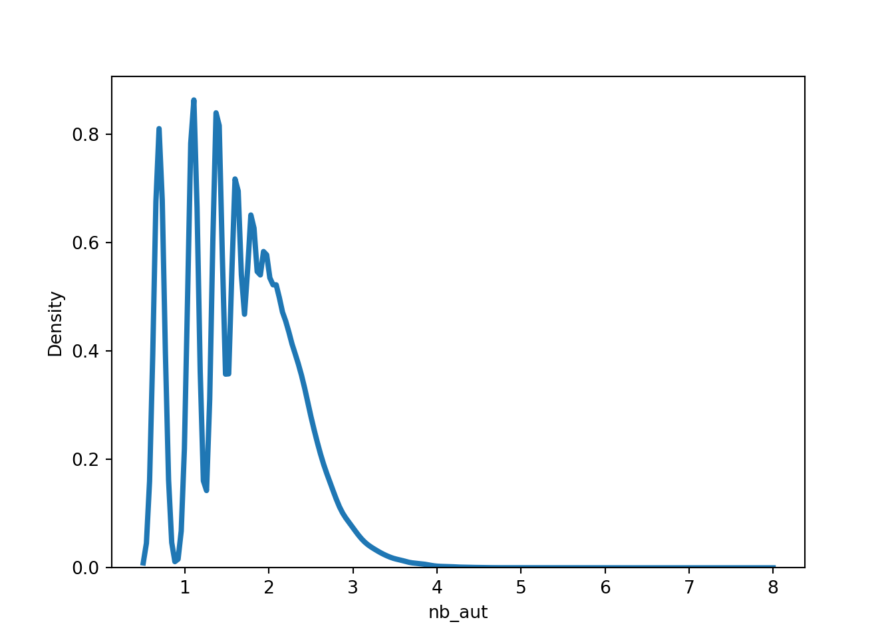

import pandas as pd
import numpy as np
import time
import re
import seaborn as sns
import plotly.express as px
t = time.time()
table_1 = pd.read_csv('data/table_1.csv')
table_2 = pd.read_csv('data/table_2.csv')
cities = pd.read_csv('data/cities_loc.csv')
time.time() - t## 0.8861207962036133Remove articles with no pmid and no DOI, and all articles before 1975
t = time.time()
table_1 = table_1.dropna(subset = ['pmid', 'doi'])
time.time() - t## 0.009485244750976562t = time.time()
table_2 = table_2[table_2.year_pub > 1975].dropna(subset = ['pmid'])
time.time() - t## 0.010823249816894531Merge the two datasets, pmid is unique for each paper
t = time.time()
final_table = table_1.merge(table_2, how = 'inner', on = 'pmid')
time.time() - t## 0.020853042602539062final_table## pmid doi ... oa cited
## 0 32837036.0 10.1007/s12291-020-00919-0 ... Y 0
## 1 32196410.0 10.1080/22221751.2020.1746199 ... Y 61
## 2 32778421.0 10.1016/j.jiph.2020.07.011 ... Y 0
## 3 32730205.0 10.1016/j.ijsu.2020.07.032 ... Y 0
## 4 32394467.0 10.1002/jcp.29785 ... Y 1
## ... ... ... ... .. ...
## 108717 10808380.0 10.1007/s11606-000-0019-1 ... Y 0
## 108718 22696127.0 10.1007/s13244-012-0153-4 ... Y 2
## 108719 3368329.0 10.1093/nar/16.suppl.r315 ... N 90
## 108720 25412402.0 10.1002/14651858.cd000011.pub4 ... N 222
## 108721 21994484.0 10.1007/s13225-011-0088-y ... Y 44
##
## [108722 rows x 12 columns]plot distribution for the log(number of authors +1)
sns.distplot(np.log(final_table.nb_aut +1), hist = False, kde = True,
kde_kws = {'linewidth': 3})
How many papers contains ‘deep learning’ or ‘machine learning’ and ‘neural network’ (also with a ‘s’ for neural networks) in their title ? Create a binary variable to save this information. What is the mean of authors for ML papers and non-ML papers ? Transform has_data and oa into binary variable also, what is the share of ML paper that are oa ?
t = time.time()
final_table['title'] = final_table.title.str.lower()
final_table = final_table.assign(
ML = np.where(final_table.title.str.contains('deep learning|machine learning|neural networks?'),1,0),
has_data = np.where(final_table.has_data == 'Y',1,0),
oa = np.where(final_table.oa == 'Y',1,0))
time.time() - t## 0.10886812210083008final_table## pmid doi ... nb_aut ML
## 0 32837036.0 10.1007/s12291-020-00919-0 ... 1 0
## 1 32196410.0 10.1080/22221751.2020.1746199 ... 4 0
## 2 32778421.0 10.1016/j.jiph.2020.07.011 ... 4 0
## 3 32730205.0 10.1016/j.ijsu.2020.07.032 ... 7 0
## 4 32394467.0 10.1002/jcp.29785 ... 6 0
## ... ... ... ... ... ..
## 108712 7704896.0 10.1128/cmr.8.1.87-112.1995 ... 9 0
## 108718 22696127.0 10.1007/s13244-012-0153-4 ... 1 0
## 108719 3368329.0 10.1093/nar/16.suppl.r315 ... 5 0
## 108720 25412402.0 10.1002/14651858.cd000011.pub4 ... 16 0
## 108721 21994484.0 10.1007/s13225-011-0088-y ... 1 0
##
## [107104 rows x 14 columns]np.sum(final_table.ML)## np.int64(223)np.sum(final_table.oa)## np.int64(77847)np.sum(final_table.has_data)## np.int64(23980)final_table.groupby('ML').agg({'nb_aut':np.mean,
'oa':np.mean})## <string>:2: FutureWarning:
##
## The provided callable <function mean at 0x10b35aa20> is currently using SeriesGroupBy.mean. In a future version of pandas, the provided callable will be used directly. To keep current behavior pass the string "mean" instead.
##
## nb_aut oa
## ML
## 0 5.772364 0.726677
## 1 6.040359 0.802691Clean up pub_type, for simplicity just get the first type
t = time.time()
final_table['pub_type'] = final_table.pubtype.map(lambda pubtype: re.findall('\[\"(.*?)\"',pubtype)[0])
time.time() - t## 0.03443408012390137final_table[['pubtype','pub_type']]## pubtype pub_type
## 0 {"pubType": ["review-article", "Review", "Jour... review-article
## 1 {"pubType": ["review-article", "Journal Articl... review-article
## 2 {"pubType": ["review-article", "Review", "Jour... review-article
## 3 {"pubType": ["review-article", "Review", "Jour... review-article
## 4 {"pubType": ["review-article", "Review", "Jour... review-article
## ... ... ...
## 108712 {"pubType": ["Research Support, Non-U.S. Gov't... Research Support, Non-U.S. Gov't
## 108718 {"pubType": ["calendar", "Journal Article"]} calendar
## 108719 {"pubType": ["Comparative Study", "Research Su... Comparative Study
## 108720 {"pubType": ["Meta-Analysis", "Research Suppor... Meta-Analysis
## 108721 {"pubType": ["research-article", "Journal Arti... research-article
##
## [107104 rows x 2 columns]What is the pub type with the highest mean/sd of citation ? (use cited and the cleaned pub_type)
final_table.groupby('pub_type').agg({'cited':np.mean}).sort_values('cited',ascending = False)## <string>:1: FutureWarning:
##
## The provided callable <function mean at 0x10b35aa20> is currently using SeriesGroupBy.mean. In a future version of pandas, the provided callable will be used directly. To keep current behavior pass the string "mean" instead.
##
## cited
## pub_type
## Consensus Development Conference 94.128205
## Research Support, American Recovery and Reinves... 64.416667
## Research Support, U.S. Gov't, P.H.S. 53.980543
## Research Support, N.I.H., Intramural 48.481308
## Clinical Trial, Phase II 35.285714
## ... ...
## Webcast 0.000000
## Addresses 0.000000
## Technical Report 0.000000
## Twin Study 0.000000
## Portrait 0.000000
##
## [83 rows x 1 columns]final_table.groupby('pub_type').agg({'cited':lambda x : np.std(x,ddof = 1)}).sort_values('cited',ascending = False)## cited
## pub_type
## Consensus Development Conference 392.044048
## Research Support, N.I.H., Intramural 144.450609
## Research Support, U.S. Gov't, P.H.S. 97.102551
## editorial 90.848164
## Clinical Conference 84.303766
## ... ...
## Equivalence Trial NaN
## Personal Narratives NaN
## Twin Study NaN
## Validation Studies NaN
## obituary NaN
##
## [83 rows x 1 columns]Which are the most representative countres by year ? Store this information in an other tibble by keep only pmid and authors, get the country for each author from the loc_cities.csv. You may want to separate rows for each authors to get all countries involved in the paper,if an authors have multiple affiliations, take the first one.
countries = list(cities.country.str.lower().drop_duplicates())
countries_pd = final_table[['pmid', 'authors']]
print(countries_pd['authors'][0])## <AUTHOR> Das SK Subir Kumar Das<AFFILIATION>Department of Biochemistry, College of Medicine and JNM Hospital, WBUHS, Kalyani, Nadia, West Bengal 741235 India.print(countries_pd['authors'][1])## <AUTHOR> Lin L Ling Lin<AFFILIATION>Department of Infectious Diseases, Peking Union Medical College Hospital, Peking Union Medical College, Chinese Academy of Medical Sciences, Beijing, People's Republic of China.<AUTHOR> Lu L Lianfeng Lu<AFFILIATION>Department of Infectious Diseases, Peking Union Medical College Hospital, Peking Union Medical College, Chinese Academy of Medical Sciences, Beijing, People's Republic of China.<AUTHOR> Cao W Wei Cao<AFFILIATION>Department of Infectious Diseases, Peking Union Medical College Hospital, Peking Union Medical College, Chinese Academy of Medical Sciences, Beijing, People's Republic of China.<AUTHOR> Li T Taisheng Li<AFFILIATION>Department of Infectious Diseases, Peking Union Medical College Hospital, Peking Union Medical College, Chinese Academy of Medical Sciences, Beijing, People's Republic of China. <AFFILIATION>Center for AIDS Research, Chinese Academy of Medical Sciences and Peking Union Medical College, Beijing, People's Republic of China. <AFFILIATION>Clinical Immunology Center, Chinese Academy of Medical Sciences, Beijing, People's Republic of China. <AFFILIATION>Tsinghua-Peking Center for Life Sciences, School of Medicine, Tsinghua University, Beijing, People's Republic of China.t = time.time()
countries_pd = countries_pd.assign(
authors=countries_pd.authors.str.split('<AUTHOR>')).explode('authors')
time.time() - t## 0.14847517013549805countries_pd## pmid authors
## 0 32837036.0
## 0 32837036.0 Das SK Subir Kumar Das<AFFILIATION>Department...
## 1 32196410.0
## 1 32196410.0 Lin L Ling Lin<AFFILIATION>Department of Infe...
## 1 32196410.0 Lu L Lianfeng Lu<AFFILIATION>Department of In...
## ... ... ...
## 108720 25412402.0 Jedraszewski D Dawn Jedraszewski<AFFILIATION>...
## 108720 25412402.0 Cotoi C Chris Cotoi<AFFILIATION>None
## 108720 25412402.0 Haynes RB R Brian Haynes<AFFILIATION>None
## 108721 21994484.0
## 108721 21994484.0 Jaklitsch WM Walter M Jaklitsch<AFFILIATION>D...
##
## [725407 rows x 2 columns]t = time.time()
countries_pd = countries_pd[(countries_pd.authors != '')
& (-countries_pd.authors.str.contains('<AFFILIATION>None'))]
time.time() - t## 0.12279915809631348t = time.time()
countries_pd = countries_pd.assign(
authors = countries_pd.authors.map(lambda aff: aff.split('<AFFILIATION>')[1])).drop_duplicates(subset=['pmid', 'authors'])
time.time() - t## 0.19747710227966309countries_pd## pmid authors
## 0 32837036.0 Department of Biochemistry, College of Medicin...
## 1 32196410.0 Department of Infectious Diseases, Peking Unio...
## 1 32196410.0 Department of Infectious Diseases, Peking Unio...
## 2 32778421.0 Université du Québec à Chicoutimi (UQAC), Dépa...
## 2 32778421.0 Centre de recherche, Institut universitaire de...
## ... ... ...
## 108709 18843651.0 Department of Anesthesiology, Pharmacology and...
## 108712 7704896.0 Department of Biomedicine, University of Pisa,...
## 108719 3368329.0 National Institute of Genetics, Mishima, Japan.
## 108720 25412402.0 Department of Clinical Epidemiology and Biosta...
## 108721 21994484.0 Department of Systematic and Evolutionary Bota...
##
## [291657 rows x 2 columns]t = time.time()
for abr, name in zip([' USA', ' UK', ' Korea'], ['United States', 'United Kingdom', 'South Korea']):
countries_pd.authors = countries_pd.authors.map(lambda aff: re.sub(abr,name,aff))
countries_pd.authors = countries_pd.authors.str.lower()
time.time() - t## 0.3308122158050537t = time.time()
countries_matched = countries_pd.authors.map(lambda aff: [country for country in countries if country in aff])
countries_pd = countries_pd.assign(country = countries_matched).drop('authors', axis = 1)
countries_pd['country'] = countries_pd.country.map(lambda x: x[0] if x else '')
countries_pd## pmid country
## 0 32837036.0 india
## 1 32196410.0 china
## 1 32196410.0 china
## 2 32778421.0 canada
## 2 32778421.0 canada
## ... ... ...
## 108709 18843651.0 canada
## 108712 7704896.0 italy
## 108719 3368329.0 japan
## 108720 25412402.0 canada
## 108721 21994484.0 austria
##
## [291657 rows x 2 columns]time.time() - t## 4.479964971542358t = time.time()
countries_pd = countries_pd[countries_pd.country != ''].drop_duplicates(subset=['pmid', 'country'])
time.time() - t## 0.020374059677124023countries_pd## pmid country
## 0 32837036.0 india
## 1 32196410.0 china
## 2 32778421.0 canada
## 3 32730205.0 china
## 4 32394467.0 iran
## ... ... ...
## 108709 18843651.0 canada
## 108712 7704896.0 italy
## 108719 3368329.0 japan
## 108720 25412402.0 canada
## 108721 21994484.0 austria
##
## [111479 rows x 2 columns]t = time.time()
countries_year = countries_pd.merge(final_table[['pmid','year_pub']], how = 'left', on = 'pmid')
time.time() - t## 0.007232666015625countries_year## pmid country year_pub
## 0 32837036.0 india 2020.0
## 1 32196410.0 china 2020.0
## 2 32778421.0 canada 2020.0
## 3 32730205.0 china 2020.0
## 4 32394467.0 iran 2020.0
## ... ... ... ...
## 111474 18843651.0 canada 2008.0
## 111475 7704896.0 italy 1995.0
## 111476 3368329.0 japan 1988.0
## 111477 25412402.0 canada 2014.0
## 111478 21994484.0 austria 2011.0
##
## [111479 rows x 3 columns]countries_year = countries_year.groupby(['country', 'year_pub']).agg(n = ('pmid', len)).sort_values('n', ascending = False)
countries_year = countries_year.reset_index()
countries_year## country year_pub n
## 0 united states 2020.0 11668
## 1 china 2020.0 7888
## 2 united kingdom 2020.0 6262
## 3 italy 2020.0 5910
## 4 india 2020.0 3297
## ... ... ... ...
## 1904 mexico 2003.0 1
## 1905 mexico 2005.0 1
## 1906 mexico 2010.0 1
## 1907 micronesia 2014.0 1
## 1908 lebanon 2014.0 1
##
## [1909 rows x 3 columns]Select the top 25 of countries involved in coronavirus research since 2001, plot the evolution on a bar chart with plot_ly
wide_countries = countries_year.pivot(index="year_pub", columns="country", values="n").reset_index()
wide_countries = wide_countries[wide_countries.year_pub > 2000]
countries_to_plot = list(wide_countries.fillna(0).drop('year_pub',axis = 1).apply(sum).sort_values(ascending=False).head(10).index)
fig = px.bar(wide_countries, x="year_pub", y=countries_to_plot)
fig.update_yaxes(type="log")